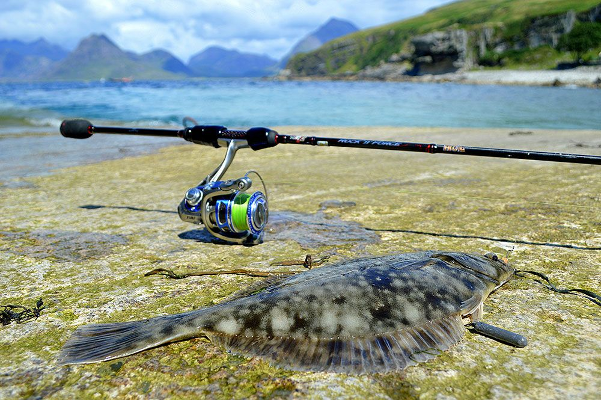

LRF (Light Rock Fishing)

Τι είναι η LRF
Η LRF (Light Rock Fishing) είναι μια μοντέρνα τεχνική υπερελαφρού spinning στη θάλασσα, που χρησιμοποιεί πολύ λεπτό εξοπλισμό και μικροσκοπικά τεχνητά δολώματα για να στοχεύσει κυρίως μικρά αλλά και μεσαία ψάρια γύρω από βράχια, λιμάνια και παραθαλάσσιες κατασκευές. Στόχος της τεχνικής δεν είναι μόνο τα μεγάλα ψάρια, αλλά και η σύλληψη πολλών διαφορετικών ειδών με λεπτό, «διακριτικό» δούλεμα του τεχνητού.
Εξοπλισμός
Στην LRF χρησιμοποιούνται πολύ ελαφριά καλάμια spinning που ρίχνουν συνήθως μέχρι 5–8 γραμμάρια, μικροί μηχανισμοί και πολύ λεπτά νήματα ή fluorocarbon, ώστε τα ελαφριά τεχνητά να φτάνουν μακριά και να έχουν φυσική κίνηση.[web:574][web:575] Τα δολώματα είναι μικρά σιλικονούχα, micro jigs, hardbaits και creature baits, δεμένα σε μικρά jigheads ή ελαφριές αρματωσιές που δουλεύουν κοντά σε βράχια, προβλήτες και λιμενοβραχίονες.
Πώς δουλεύει η τεχνική
Ο ψαράς κάνει κοντινές και μεσαίες βολές προς βράχια, σκάλες, κολόνες ή κανάλια και φέρνει το τεχνητό με μικρές, νευρικές κινήσεις του καλαμιού, αφήνοντάς το συχνά να βυθίζεται ή να σέρνεται αργά κοντά στον βυθό.[web:571][web:572] Η λεπτή πετονιά/νήμα επιτρέπει άμεση αίσθηση κάθε τσιμπήματος, ενώ η μικρή διάμετρος βοηθά τα micro lures να δουλεύουν σωστά ακόμη και σε σχετικά βαθιά νερά ή με ελαφρύ ρεύμα.
Πού χρησιμοποιείται
Η LRF εφαρμόζεται κυρίως από ακτή: σε λιμάνια, βραχώδεις ακτές, προβλήτες, rock pools και ήρεμες παραλίες, όπου υπάρχουν gobies, σπάροι, λαβράκια, σαργοί, μικρά μαγιάτικα, γρύλοι και πολλά ακόμη είδη.[web:573][web:579] Είναι τεχνική που προσφέρει συνεχείς επαφές και διασκέδαση με μικρά και μεσαία ψάρια, κάνοντάς την ιδανική τόσο για εξερεύνηση νέων τόπων όσο και για ψάρεμα “multi‑species” στη Μεσόγειο.